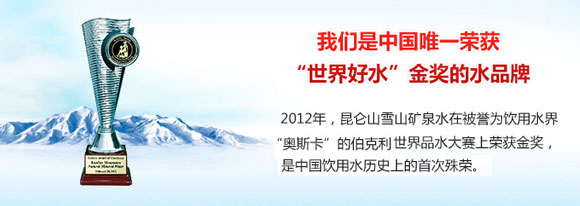

『好水讲堂一 “世界好水”金奖』
昆仑山雪山矿泉水为中国首次斩获饮水界“奥斯卡”金奖

昆仑山雪山矿泉水为中国首次斩获饮水界“奥斯卡”金奖
探索世界海拔最高的水工厂——昆仑山4115米工厂
带你重新认识饮用水四级标准，升级生命质量

一级健康好水源自海拔6000米的昆仑雪山

根据不同人体用水需求，饮用专属好水

昆仑山雪山矿泉水，荣膺数项国际饮用水界大奖
昆仑山雪山矿泉水凭借在水源地保护方面的卓越成就，一句荣膺联合国环境署授予的“中国优秀环境规划证书”
昆仑山雪山矿泉水在有全球“水界奥斯卡”之称的美国伯克利斯普林斯国际品水大赛中获得“好水金奖“
昆仑山雪山矿泉水获得国家发改委宏观院公众营养与发展中心授予的国内首个“黄金水源地”
昆仑山雪山矿泉水获得中国饮料工业协会颁发的“Bev-Mode荣誉奖“
昆仑山雪山矿泉水被中国矿业联合会天然矿泉水专业委员会评为“中国优质矿泉水水源”
昆仑山雪山矿泉水获得“中国食品健康七星奖•信赖100最受消费者信赖食品品牌”
昆仑山雪山矿泉水获得由食品安全亚运行活动组织委员会颁发的“亚运食品安全突出贡献奖”